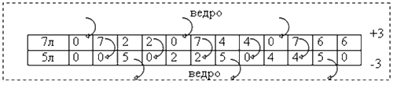

Алгоритмы над целыми числами. Проверка на простоту, разложение на множители. Наибольший общий делитель и наименьшее общее кратное: алгоритм Евклида. Признак Паскаля. Расширенный алгоритм Евклида
Алгоритмы над целыми числами применяются при решении множества задач: для сокращения дробей, разложения на множители.
Алгоритм Евклида для нахождения НОД
Свой алгоритм Евклид (древнегреческий математик, живший примерно в 300 г. до н.э.) придумал для решения задачи о соизмеримости двух отрезков. Общей мерой (единицей измерения) отрезков с длинами $L_1$ и $L_2$ является отрезок с наибольшей возможной длиной $L$, который можно уложить без остатка как в первом отрезке, так и во втором. Например, для отрезков 10 и 15 такой общей мерой будет отрезок с длиной 5 (им можно пользоваться как единицей измерения для обоих отрезков). При этом 5 будет наибольшим общим делителем 10 и 15.
В общем случае, алгоритм Евклида - это метод нахождения наибольшего общего делителя (НОД) нескольких чисел.
Целое число $a$ делится на целое число $b$ ($b \ne 0$), если существует целое число $k$, такое что $a=kb$. В таком случае $b$ называют делителем числа $a$; число $a$ называют кратным числа $b$.
Если $a$ и $b$ делятся на $c$, то их сумма $a+b$ и их разность $a-b$ делятся на $c$.
Если $a$ делится на $c$, а $b$ делится на $d$, то их произведение $a*b$ делится на $c*d$.
$a$ и $b$ – положительные целые числа, $c$ - является общим делителем чисел $a$ и $b$, если $a$ делится на $c$ и $b$ делится на $c$.
Среди общих делителей чисел $a$ и $b$ (не равных одновременно нулю) есть наибольший общий делитель (по-английски Greatest common divisor - GCD), обозначаемый НОД($a,b$) или $GCD(a,b)$.
Если $a$ делится на $b$, то $GCD(a,b) = b$. Например: $GCD(50,10)=10$.
$GCD(a,a)=a$. Например: $GCD(32,32)=32$.
Если $a \gt b$, то $GCD(a,b)=GCD(a-b,b)$.
Если $GCD(a,b)=1$, то числа $a$ и $b$ - взаимно простые.
Алгоритм Евклида с вычитаниями
Последовательно вычитая из большего числа меньшее до тех пор, пока они не станут равными, придем к НОД этих чисел.
Пример: Найти НОД двух чисел 264 и 192.
Решение: НОД(264, 192) = НОД(72, 192) = НОД(72, 120) = НОД(72, 48) = НОД(24, 48) = НОД(24, 24) = 24
Задача. Найти НОД двух натуральных чисел $a$ и $b$.
Используем для решения задачи алгоритм Евклида с вычитаниями.
Реализация на Pascal:
function GCD( a,b:integer ):integer; { определение НОД двух чисел }
begin
while a <> b do
if a > b then a:=a-b else b:=b-a;
GCD := b;
end;
begin { Пример использования }
writeln(GCD(10,15)); { Выведет 5 }
end.
Реализация на С/C++:
#include <stdio.h>
int GCD( int a, int b ){ // определение НОД двух чисел
while(a != b)
if (a > b) a-=b; else b-=a;
return b;
}
int main(){ // Пример использования
printf("%d",GCD(10,15)); // Выведет 5
return 0;
}
Алгоритм Евклида с делением
Если применить алгоритм Евклида с вычитаниями к паре чисел $(1,10^{20})$, то будет выполнено около $10^{20}$ вычитаний, это слишком долго!
Можно за один раз вычитать из $a$ $b$ столько раз, сколько можно. Алгоритм Евклида с делением основан на том, что если $a=bq+r$, где $r$ - остаток от деления $a$ на $b$ ($0 \le r < b$), то $GCD(a,b) = GCD(r,b)$.
Последовательно применяя это утверждение можно понять, что НОД двух чисел – это последний не равный нулю остаток от деления большего числа на меньшее.
Пример: найти НОД двух чисел 6069 и 663.
Решение:
663 = 102*6+51 НОД(663, 102) = НОД (102, 51)
102 = 51*2+0 НОД(102, 51) = 51 (согласно утверждению 3)
Следовательно, 51 = НОД(102, 51) = НОД(663, 102) = НОД(6069, 663)
Демонстрационная Flash-программа показывает вычисление НОД любых 2 чисел:
Рассмотрим алгоритм и процедуру-функцию к решению задачи 1.1, используя для нахождения НОД двух чисел алгоритм Евклида с делением.
Алгоритм:
Функция Вычисление_НОД(целое a, целое b)
Пока (b <> 0)
r := a по модулю b (остаток от деления a на b), r - временная переменная (буфер)
a := b
b := r
конец цикла
Вывод результата - a
Конец функции
Реализация на Pascal:
function GCD( a,b:int64 ):int64; { Функция для вычисления НОД при помощи деления }
begin
if b = 0 then { Если b = 0 }
GCD := a { следовательно a=НОД }
else { Пока b <> 0 }
GCD := GCD(b,a mod b); { Вычисляем остаток от деления a на b, а заменяем на b, b заменяем на r }
end;
begin
writeln(GCD(264, 192)); { Выведет: 24 }
end.
def GCD(a,b): # Функция для вычисления НОД при помощи деления return a if b == 0 else GCD(b,a%b) # Вычисляем остаток от деления a на b, а заменяем на b, b заменяем на r=a mod b # НОД = a если b = 0 иначе НОД=НОД(b,r), r - остаток от деления a на b print GCD(264, 192) # Выведет: 24
Вычислить НОД трех натуральных чисел $a$, $b$ и $c$ можно так:
$GCD(a,b,c)=GCD(GCD(a,b),c)$
В общем случае, справедлива следующая рекуррентная формула:
$GCD(a_1,a_2,...,a_n) = GCD(GCD(a_1,a_2,...,a_{n-1}), a_n)$.
Ниже приведена функция нахождения НОД для массива натуральных чисел $a(1..n)$ с использованием цикла.
function GCD( ... )...
....
function GCDM( a : array of int64 ):int64;
var d : int64; i : integer;
begin
d := a[0];
for i:= 1 to length(a)-1 do
d := GCD(d, a[i]);
GCDM := d;
end;
begin { Пример вызова }
writeln(GCDM([15,10,25]));
end.
Диофантовы уравнения, расширенный алгоритм Евклида
С помощью алгоритма Евклида можно доказать одно важное свойство НОД.
Если $GCD(a,b)=d$, то можно найти такие целые числа $x$ и $y$, что $ax+by=d$.
Важным частным случаем этого утверждения является:
Если числа $a$ и $b$ взаимно просты ($GCD(a,b) = 1$), то найдутся такие целые числа $x$ и $y$, что $ax + by = 1$.
Решение в целых числах уравнения $ax + by = c$ для любого целого $c$ получается из решения предыдущего уравнения умножением на $c$.
Уравнение вида $ax+by=c$, разрешимое в целых числах, называется диофантовым уравнением (по имени древнегреческого математика Диофанта).
Существует несколько типов задач, которые сводятся к решению диофантовых уравнений. К таким, например, относятся:
- задачи по размену суммы денег купюрами определенного достоинства;
- задачи на переливание.
Критерий разрешимости диофантова уравнения:
Чтобы уравнение $ax+by=c$ имело решение в целых числах $(x,y)$, необходимо и достаточно, чтобы $c$ делилось на $d=GCD(a,b)$.
Если это условие выполнено и $(x_0,y_0)$ – одно из решений этого уравнения, то все целочисленные решения выглядят так:
$x = x_0 + {b_1}{t}$
$y = y_0 - {a_1}{t}$, где $t$ - целое число;
$a_1=a/d$, $b_1=b/d$.
Способ решения уравнения $ax + by = d$ основан на алгоритме Евклида: определяя $GCD(a,b)$ методом последовательного деления, на каждом шаге выражаем остаток от деления через исходные числа $a$, $b$ до тех пор, пока остаток не станет нулем. Следовательно, на предыдущем шаге остаток равен $GCD(a,b)$, и мы одновременно получаем одно из решений уравнения.
$a = {b}{q_1}+{r_1}$; $r_1=a-{b}{q_1} = {a}{x_1}+{b}{y_1}$
$b = {r_1}{q_2}+{r_2}$; ${r_2}=b-{r_1}{q_2}=a(-{x_1}{q_2})+b(1-{y_1}{q_2}) = a{x_2}+ b{y_2}$;
$r_1={r_2}{q_3}+{r_3}$; ${r_3}={r_1}-{r_2}{q_3}=a({x_1}-{x_2}{q_3})+b(y_1-{y_2}{q_3})= a{x_3}+b{y_3}$
...
$r_{n-2}=r_{n-1}{q_n}+{r_n}$; ${r_n}=a(x_{n-2}-{x_{n-1}}{q_n})+b(y_{n-2}-y_{n-1}{q_n})= a{x_n}+b{y_n}$
$r_{n-1}$ делится на $r_n$ без остатка
Следовательно, $r_n=GCD(a,b)$, а $(x_n,y_n)$ – искомое решение уравнения $ax + by = d$;
Рекуррентные формулы определения решения, как видно из выкладок, имеют следующий вид: (для запоминания: начальная “1” - для первого параметра в функции НОД)
$x_{-1}=1$; $y_{-1}=0$; ($a = {a}\cdot{1} + {b}\cdot{0}$ - представление числа $a$)
$x_0=0$; $y_0=1$; ($b = {a}\cdot{0} + {b}\cdot{1}$ - представление числа $b$)
.....
$x_n=x_{n-2}-x_{n-1}{q_n}$; $y_n=y_{n-2}-y_{n-1}{q_n}$; $n \ge 1$
Замечание. Достаточно рассмотреть одно рекуррентное соотношение, например, для вычисления $x$, так как можно использовать исходное уравнение для определения $y=(d–ax)/b$.
Пример 1.3: Найти целочисленное решение уравнения $258x + 114y = 6$

Рис.1.1
Решение:
258 = 114 · 2 + 30; $q_1 = 2$;
114 = 30 · 3 + 24; $q_2 = 3$;
30 = 24 · 1 + 6; $q_3 = 1$;
24 = 6 · 4; НОД(258,114) = 6
x3 = 4; y3 = -9 (таблица вычислений на рис.1.1);
Проверка: ${258}*{4} – {114}*{9} = 6$
Алгоритм для решения в целых числах уравнения $ax+by=c$.
1. Найдем по алгоритму Евклида с делениями $d=GCD(a,b)$. Одновременно определяем решение уравнения $ax_0+by_0=d$ по вышеизложенным рекуррентным формулам.
2. Проверим, делится ли число $c$ на $GCD(a,b)$. Если нет, то решений в целых числах не существует.
3. Если делится, то делим на $d$ коэффициенты в правой и левой части уравнения $ax+by=c$.
Получим эквивалентное уравнение ${a_1}{x}+{b_1}{y}={c_1}$,
где $a_1=a/d$, $b_1=b/d$, $c_1=c/d$.
4. Найденная пара чисел $(x_0,y_0)$ – частное решение уравнения ${a_1}x+{b_1}y=1$, общее решение этого уравнения находится по формулам: $x = x_0+{b_1}t$ и $у = y_0-{a_1}t$, где $x_h={b_1}t$, $y_h=-{a_1}t$ ($t$ – любое целое число) являются общим решением однородного уравнения ${a_1}x+{b_1}y=0$.
5. Частное решение исходного уравнения $ax+by=c$ получается умножением пары $(x_0,y_0)$ на $c_1$. Общее решение уравнения $ax+by=c$ получается сложением частного решения и общего решения однородного уравнения $ax+by=0$ (или эквивалентного ${a_1}x+{b_1}y=0$).
Достоинство данного алгоритма в том, что решение уравнения определяется одновременно с нахождением $GCD(a,b)$ без дополнительных массивов. Алгоритм справедлив также при $a \lt b$.
Целочисленное решение уравнения $ax_0+by_0=GCD(a,b)$
function dioph2( a,b:int64; var x0,y0:int64 ):int64;
var x1,y1,q,r,x,y:int64;
begin
x0 := 1; y0 := 0;
x1 := 0; y1 := 1;
while b <> 0 do begin
q := a div b; { Частное }
r := a mod b; { Остаток }
a := b;
b := r;
x := x0 - x1 * q; y := y0 - y1 * q;
x0 := x1; y0 := y1;
x1 := x; y1 := y;
end;
dioph2 := a; { НОД(a,b) }
end;
var a,b,x0,y0,GCD : int64;
test : integer;
begin
for test := 1 to 1000000 do begin { Прогоняем тесты }
a := random(2000)+1; { Генерируем 2 случайных числа }
b := random(2000)+1;
GCD := dioph2(a,b,x0,y0);
assert( a*x0+b*y0 = GCD ); { Проверка что ответ верный! }
end;
end.
Решение общего линейного диофантова уравнения.
Диофантово уравнение общего вида: ${a_1}{x_1} + {a_2} {x_2} + ... + {a_n} {x_n} = c$, где $a_1, a_2, …, a_n, c$ — целые числа, а $GCD(a_1,...,a_n)$ — наибольший общий делитель чисел $a_i$, где $1 \le i \le n$ и не все числа $a_i$ равны нулю.
С помощью алгоритма Евклида можно доказать, что диофантово уравнение ${a_1}{x_1}+{a_2}{x_2}+...+{a_n}{x_n} = GCD(a_1,a_2,...,a_n)$ всегда разрешимо, следовательно, критерий разрешимости: для существования решения в целых числах этого уравнения необходимо и достаточно, чтобы число $с$ делилось на $GCD(a_1,a_2,...,a_n)$.
Рассмотрим алгоритм решения на частном примере.
Пример: найти решение уравнения $18x+42y+10z=14$ в целых числах.
Решение:
Для принятых выше обозначений $a_1=18$, $a_2=42$, $a_3=10$, $c=14$.
Легко угадывается решение: $(x = 0; y = 2; z = -7)$.
Если любому целому числу, представимому левой частью уравнения, сопоставить конкретный набор $(x,y,z)$, то действия с такими числами (сложение, вычитание, умножение на любое целое число) эквивалентны аналогичным действиям с соответствующими наборами (поэлементно). В частности, для коэффициентов уравнения числу 18 можно сопоставить набор $(1,0,0)$, т.к. 18 · 1 + 42 · 0 +10 · 0 = 18, для числа 42 — набор (0,1,0), а для числа 10 — набор (0,0,1).
Найдем число $d=GCD(18,42,10)$ и целочисленное решение уравнения $18x+42y+10z=d$
Используем свойства:
$GCD(a_1,a_2,a_3)=GCD(GCD(a_1,a_2),a_3))$ для последовательного определения НОД чисел;
$GCD(a,b)=GCD(b,r)$, где $r$ — остаток целочисленного деления $a$ на $b$, причем $0 ≤ r < |b |$.
Представим обобщенный алгоритм Евклида для решения диофантова уравнения в табличном виде (рис.1.2).
Знак ↑ пределяет выражение, как в ячейке выше и для наглядности таблицы используется в пассивных столбцах, не участвующих в текущих вычислениях. В каждой строке подчеркивается текущий найденный набор.
| $a_1$ | набор | $a_2$ | набор | $a_3$ | набор | примечание |
| 18 | (1,0,0) | 42 | (0,1,0) | 10 | (0,0,1) | $GCD(a,b)=GCD(b,r)$ $r=a-bq$; $0 \le r < |b|$ |
| 6 | (-2,1,0) | 18 | (1,0,0) | ↑ | ↑ |
6 = 42 – 18 · 2
(-2,1,0) = (0,1,0) - (1,0,0) · 2 |
| 6 | (-2,1,0) | 0 | (7,-3,0) | ↑ | ↑ |
0 = 18 – 6 · 3
(7,-3,0) = (1,0,0) - (-2,1,0) · 3 |
| 4 | (2,-1,1) | ↑ | ↑ | 6 | (-2,1,0) |
4 = 10 – 6 · 1
(2,-1,1) = (0,0,1) - (-2,1,0) |
| 2 | (-4,2,-1) | ↑ | ↑ | 4 | (2,-1,1) |
2 = 6 – 4 · 1
(-4,2,-1) = (-2,1,0) - (2,-1,1) |
| 2 | (-4,2,- 1) | ↑ | ↑ | 0 | (10,- 5,3) |
0 = 4 – 2 · 2
(10,-5,3) = (2,-1,1) - (-4,2,-1) · 2 |
| 2 | (-4,2,-1) | 0 | (7,- 3,0) | 0 | (10,-5,3) | итоговая строка результатов |
Последняя строка таблицы определяет результаты решения диофантова уравнения.
Ненулевое значение в первом столбце определяет $GCD(18,42,10)=2$. Соответствующий набор $(x = -4, y = 2, z = -1)$ определяет частное решение уравнения $18x + 42y + 10z=GCD(18, 42,10)$. Правая часть исходного уравнения делится на GCD коэффициентов, следовательно, частное решение исходного уравнения существует и определяется умножением на целочисленный коэффициент $c/d=7$, т.е. набор $(x=-28, y=14, z=-7)$ является частным решение исходного уравнения. Наборы при нулевых результирующих коэффициентах определяют независимые решения однородного уравнения $18x+42y+10z=0$. Независимость наборов означает, что нельзя получить соответствующие компоненты одного набора из другого умножением на какое-либо целое число (это следует из сравнения третьих компонент в наборах). Очевидно, что решение однородного уравнения можно умножать на любую целочисленную константу, получая вновь решение. Следовательно, общее решение уравнения можно записать следующим образом.
$\begin{cases}
x = -28 + 7 t_1 + 10 t_2 \\
y = 14 - 3 t_1 - 5 t_2 \\
z = -7 + 0 t_1 + 3 t_2 \end{cases}$
где $t_1$, $t_2$ — любые целые числа
Легко проверить, что для любых целых $t_1$ и $t_2$ тройки $(x,y,z)$ являются решениями уравнения $18x+42y+10z=14$.
Например, для $t_1=4$ и $t_2=0$ имеем $(x=0; y=2; z=-7)$, $18 \cdot 0 + 42 \cdot 2 - 10 \cdot 7=14$.
Алгоритм решения диофантова уравнения
Ниже приводится алгоритм решения уравнения ${a_1}{x_1}+{a_2}{x_2}+...+{a_n}{x_n}=GCD(a_1,a_2,...,a_n)$
Функция GCD(n, a(), x())
Задать набор N а_1{1,0,…,0}
Цикл i от 2 до n
Задать набор N а$_i $ {0,…0,1$_i $,0,…,0}
Пока a(i ) ≠ 0
q = a(1)\a(i)
t = a(i); Nt =_ Na$_i $_ { набор временный }
a(i) = a(1) - q*a(i); Na$_i $_ = Na_1 - q*Na$_i $ { покомпонентно}
a (1) = t Na _1 = Nt
Конец пока
{набор Na$_i $ содержит решение однородного уравнения}
Конец цикла i
GCD = a(1) {НОД коэффициентов}
x () = Na _1
{набор Na _1 содержит частное решение уравнения}
конец функции
Реализация на Pascal:
type
TVector = array [1..100] of Integer;
var
n, i, a1, ai, tmp: Integer;
a, x1, xi: TVector;
procedure SetUnitVector(var v: TVector; index: Integer);
begin
FillChar(v, SizeOf(TVector), 0);
v[index] := 1;
end;
procedure CalculateVector(var v1, v2: TVector; q: Integer);
var i, tmp: Integer;
begin
for i := 1 to n do begin
tmp := v2[i];
v2[i] := v1[i] - q * v2[i];
v1[i] := tmp;
end;
end;
begin
{ Ввод исходных данных }
Write('Введите количество компонент n: '); ReadLn(n);
Write('Введите компоненты Ai через пробел: ');
for i := 1 to n do Read(a[i]);
ReadLn;
{ Вычисления }
SetUnitVector(x1, 1);
a1 := a[1];
for i := 2 to n do begin
SetUnitVector(xi, i);
ai := a[i];
while ai <> 0 do begin
CalculateVector(x1, xi, a1 div ai);
tmp := ai;
ai := a1 mod ai;
a1 := tmp;
end;
end;
{ Вывод ответа }
WriteLn('НОД = ', a1);
for i := 1 to n do Write(x1[i], ' ');
WriteLn;
end.
Задача: Разменять 14 рублей “трешками” и “пятерками”.
Задачи переливания
Задача. В ведре 12 литров молока. Как разлить молоко на две равные части, используя только бидоны 5 и 7 литров?
Покажем, как эта задача сводится к решению в целых числах уравнения $7x+5y=6$.
Следующий алгоритм переливания (рисунок 4) всегда приводит к решению подобных задач:
1) В первый сосуд, если он пуст, наливаем (+1 для x)
2) Из первого сосуда доливаем второй (если возможно)
3) Из второго сосуда, если он полон, выливаем (-1для y)
Последующий пункт алгоритма выполняется, если невозможно выполнить предыдущий пункт. Каждое действие по отдельному пункту алгоритма составляет шаг переливания с дальнейшим циклическим возвратом к анализу п.1.
Согласно диофантовому уравнению, процесс заканчиваем, когда суммарный объем жидкости в обоих сосудах станет равным искомому объему.
Как видно из рисунка 4, достижение нужного объема может произойти раньше (в некоторых случаях, даже значительно раньше).

Рис.1.4
Подсчитывая количество «наливаний» ($x$ со знаком "+") для одного сосуда и «выливаний» ($y$ со знаком "-") для другого, находим решение соответствующего диофантова уравнения.
7 * 3 + 5 *(-3) = 6; $x$ = 3, $y$ = -3
Решений у такого уравнения бесконечно много. Если выберем сосуд 5 л в качестве первого – получим решение:
5 * 4 + 7 * (-2) = 6.
Количество шагов переливаний может зависеть от того, какой вместительности сосуд считать за “первым” (например, если в задаче заменить 5-литровый сосуд 3-литровым).
Для закрепления алгоритма при решении тренировочных задач 1.3 и 1.4 воспользуйтесь программой «Переливай-ка».
Задача 1.3: Разлить поровну 16 ведер кваса, находящегося в 16-ведерном бочонке, имея два пустых бочонка по 11 и 6 ведер.
Задача 1.4: Имеются три бочонка вместимостью 6, 3 и 7 ведер. В первом и третьем содержится 4 и 6 ведер кваса соответственно. Требуется разделить квас поровну между первым и третьим бочонком (по 5 вёдер).
Простые числа
Натуральное число называется простым, если оно не имеет делителей кроме единицы и самого себя.
Основная теорема арифметики. Любое целое положительное число разлагается на простые множители и притом единственным образом (докажите самостоятельно).
Задача 1.5. Определить простые делители натурального числа $n$.
Basic:
INPUT n
PRINT n; "=";
WHILE (n mod 2 = 0)
n = n \ 2
IF n <> 1 THEN
PRINT " 2 * ";
ELSE
PRINT " 2 ": END
END IF
WEND
i = 3
WHILE i <= n
IF n mod i = 0 THEN
PRINT i;
n = n \ i
IF n<>1 THEN PRINT "*";
ELSE
i = i + 2
END IF
WEND
Алгоритм:
Ввести n
Вывести n " ="
Пока n делится на 2:
n разделить на 2
Если n ≠ 1 то
Вывести " 2 * "
иначе
Вывести " 2"
Закончить программу
i = 3
Пока i ≤ n
Если n делится на i то
Вывести i
n разделить на i
Если n ≠ 1 то вывести "*"
иначе
i = i + 2
Delphi:
{$APPTYPE CONSOLE}
var
N : int64;
i : longint;
begin
Reset(Input,'factor.in');
Rewrite(Output,'factor.out');
Read(N);
Write(N,' =');
for i:=2 to trunc(sqrt(N)) do { Перебираем все числа до корня из N }
while N mod i = 0 do begin { Пока N делится на i }
write(' ',i); { Выводим множитель i }
N := N div i; { Делим на i }
if N <> 1 then write(' *'); { Если ещё будут множители, то выводим знак умножения }
end;
if N<>1 then write(' ',N); { Оставшийся множитель }
end.
Решето Эратосфена для нахождения простых чисел
Задача. Найти и вывести на экран простые числа, не превосходящие заданного числа N.
Древнегреческий математик Эратосфен (250 – 194 годы до н.э.) записывал все подряд числа на папирусе, а затем выкалывал составные числа по следующему правилу: сначала числа, делящиеся на 2, затем на 3, на 5 и т.д., то есть просеивал их как сквозь решето. В результате чего на папирусе оставались лишь простые числа. Этот алгоритм нахождения простых чисел носит название решета Эратосфена.
Basic:
INPUT "Введите N "; N
DIM a(1 TO N)
FOR i = 2 TO N
IF a(i) = 0 THEN
h = i
FOR j = i + h TO N STEP h
a(j) = 1
NEXT j
END IF
NEXT i
FOR i = 2 TO N
IF a(i) = 0 THEN PRINT i;
NEXT i
Алгоритм:
Ввести $N$
Массив ${a_i}$, $i=1,...,N$ (элементы массива нулевые)
Цикл $i = 2 .. n$
Если $a_i = 0$ то
Шаг=i
Для j = j + h до n с шагом h
a(j) = 1
конец цикла
конец если
конец цикла
Для от i = 2 до n
Если a(i) = 0 то вывести i;
конец цикла
Основная идея этой реализации алгоритма заключается в том, что индексы элементов массива представляют собой числа, а элементы массива – признаки того, являются ли эти числа простыми (значение 0) или составными (значение 1).
{ Решето Эратосфена }
var
{ Индексы элементов массива simple - числа, а элементы массива simple – признаки того, являются ли эти числа простыми }
simple : array [2..30000000] of Boolean; { Является ли число простым? }
N,i,j : Integer;
begin
{ Ввод исходных данных: число N до которого искать простые числа }
Write('Введите N: '); ReadLn(N);
{ Сначала "выписываем" все числа от 2 до N }
for i := 2 to N do
simple[i] := true;
{ Проходим в цикле все числа от 2 до N и выводим из них только простые }
for i := 2 to N do
if simple[i] then begin
{ Вывод результата - очередного простого числа }
Write(i,' ');
{ Для простого числа i вычёркиваем все кратные ему }
j := 2*i; { Первое кратное - удвоенное число i }
while j <= N do begin { Если оно попадает в допустимый диапазон }
simple[j] := false; { то мы его вычёркиваем }
j := j + i; { и переходим к следующему кратному i числу }
end;
end;
end.
Цепные дроби
Цепная дробь (или непрерывная дробь) — это математическое выражение вида:
$[a_0; a_1, a_2, a_3,\cdots] = a_0+\frac{1}{a_1+\frac{1}{a_2+\frac{1}{a_3+\ldots}}}$
где a0 где a0 есть целое число и все остальные an натуральные числа (то есть неотрицательные целые). Любое вещественное число можно представить в виде цепной дроби (конечной или бесконечной). Число представляется конечной цепной дробью тогда и только тогда, когда оно рационально. Число представляется периодической цепной дробью тогда и только тогда, когда оно является квадратичной иррациональностью.